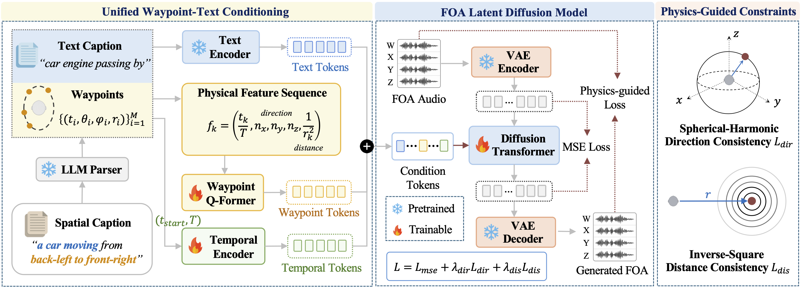

Text-to-spatial audio generation, such as text-to-First-Order Ambisonics (FOA), provides a convenient way to create spatial audio for billion-dollar gaming and film industries. However, existing text-to-FOA methods are largely data-driven and may produce audio that violates acoustic relations between source direction and distance. They also separate descriptive and parametric control, forcing users to trade usability for precision. In this paper, we present PhysWave, a physics-guided latent diffusion model for controllable text-to-FOA generation. PhysWave unifies natural-language and trajectory control through a shared waypoint-caption representation, and augments diffusion training with two differentiable acoustic priors: spherical-harmonic direction consistency and inverse-square distance consistency. To support dynamic spatial generation, we further construct a 300K-clip FOA dataset with diverse sound categories and source trajectories. Extensive results show that the proposed priors help PhysWave generate spatially consistent FOA audio while maintaining competitive audio quality. Further analyses show that these physics priors improve spatial consistency during training and can also be used as inference-time guidance for training-free spatial refinement.

For headphone playback, generated FOA signals are rendered into binaural previews using HRTF-based spatial decoding. Each row keeps the audio event fixed and changes only the spatial trajectory. The intermediate waypoint input is shown as (t, azimuth, elevation, distance), with azimuth 0° front, +90° left, -90° right, and ±180° back.
Representative prompts are shown with available comparable systems using the same text description.